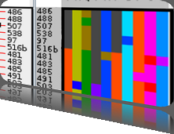

5th Symposium on Biological Data Visualization
10- 11 July // Dublin, Ireland @ ISMB/ECCB 2015
10- 11 July // Dublin, Ireland @ ISMB/ECCB 2015

Overview
Synopsis
This year's BioVis data analysis contest is about hypothesis generation in the realm of biological sequence and structure data. Contestants will be provided with sequences from a small region of the human genome that is tightly correlated with the occurrence of disease, through an unknown mechanism. This region contains several different highly variable elements, none of which individually, or in combination appear to predict the occurrence of disease, yet the region itself "follows the disease" in inheritance. One hope for understanding what's going on, comes from the fact that some combinations of these variable elements that should exist in the population (based on distributional statistics), don't seem to occur in living humans. If we could understand what is different about the combinations that appear to be lethal (have been selected against in the population), from the combinations that do occur, this might lead to better understanding of why and how this region is involved in disease. The current best biological hypothesis is that the answer revolves around non-sequence (for example structural) properties of the RNA transcribed from this region. For an introduction to the complexity of understanding RNA folding and structure, please see this brief introduction video.
The Biology
RNA (polymeric RiboNucleic Acid) has long been thought of as the literal "messaging system" of life. Its most obvious function is that it is used to make transliterated copies of the genomic blueprint, which are then sent to the molecular machines that make proteins - the structural and functional working units of living systems. Until relatively recently this simplistic idea of RNA was widely accepted. However, only roughly 1% of the genomic blueprint (the exons) actually encodes instructions for making proteins, yet large stretches of the remaining 99% (introns) are still transcribed into RNA. These transcribed intronic regions having no protein-encoding messaging purpose, and are not being translated into protein. Since life tends to be energetically conservative - it rarely wastes resources on activities that don't aid survival - this argues for these large transcribed, but not translated regions of RNA, having some as-yet unknown function, and acting through some as-yet unknown mechanism. For this contest, we present you with a set of intronic gene sequences that are tightly associated with a disease, through an unknown mechanism. The interesting parts of these sequences - where the determinants of disease or health must reside - are intronic, and so have no protein-coding consequence. They also are highly variable, and show no obvious sequence-based similarities or differences that could account for disease or health. There is an additional interesting detail in that many possible sequence variants that should occur in the population (based on rules of heredity), never appear, suggesting that these sequences are somehow lethal or highly deleterious. The best biological hypothesis is that the function of these RNA sequences, in modulating disease and health, has something to do with their "shape" - either in 2 dimensions or 3 dimensions. Unfortunately, the answer probably isn't as simple as comparing rigid structures and saying "these have this dangly bit here, and those don't". Molecules aren't rigid. We may be able to calculate a "lowest energy" structure - that is, one that given what we know, seems to be the structure the molecule will spend most of its time in - but random energy fluctuations, things bouncing off the molecule, cofactors we don't konw about, etc. all cause the molecule to adopt alternative stuctures. If these alternatives are "far uphill" on the energy landscape, the molecule probably falls back to the lowest-energy structure fairly quickly, but if there are many structures with similar energetics, the molecule may in fact spend less time in the singular lowest energy structure, than in the ensemble of slightly higher energy structures nearby. Your mission, should you choose to accept it, is to develop tools for comparing these sequences at the "2D/3D shape family" level (or based on any other physical property or combination of properties), and answer the questions "what is similar about the molecules that these sequences encode, what is different, how can they be grouped, and what features might correlate with disease?".
The Computational Picture
RNA "sequences" have properties that range from a series of simple linear languages at different resolutions, to higher-dimensional shape and interaction properties. The simple languages range from the literal symbol language encoded in the nucleic-acid base sequence itself, through higher-level languages such as the energy required to separate different subsequences of bases found along the sequence, to even higher-level languages such as the way that groups of subsequences interact to promote or inhibit association with other cellular actors that may modulate function. The higher-level languages include not just the 2D or 3D shapes into which the RNA is most-likely to fold (its "lowest energy" structure), but also the panoply of other shapes that each molecule can assume, and the landscape of energetic paths between these shapes that each molecule must traverse to assume different conformations. This challenge can therefore be addressed in many ways, from approaches to visualizing and comparing the multiple-resolution characteristics of the RNA sequences, through approaches to visualizing and comparing the fuzzy-network/weighted-adjacency matrix characteristics of the 2D structures, through approaches to comparing the (theoretical) 3D structures of the molecules, or, most likely to capture reality, a combination of all of these features.
Your Mission
This contest is about conveying commonalities and differences, and about producing hypotheses about which commonalites might be related to function, or which differences might be related to disfunction. You will be provided with a panel of sequences that are found in humans in nature, and several of the many sequences that, based on distribution of the individual sequence elements, would seem to be likely, but that haven't yet been observed in any subject. You will also be provided with a number of pre-analyzed property summaries about these sequences, ranging from structural predictions to adjacency-matrix calculations. We hope to make more analyses available, or help you conduct your own further detailed analyses during the course of the contest. Your entry should be observations/predictions, visualizations or tools, which help the biological end-user hypothesize about the possible common features that are necessary for life, or the possible missing/different features in the non-observed sequences that may be responsible for their elimination from the population. More detail about specific approaches and tasks is available on the Tasks tab. Being closely related to the Design Contest challenge of developing better representations for RNA structure, we welcome entries that range from applications of Design Challenge ideas, through full working systems that integrate shape or shape variability with other physical and sequence-based properties of the RNA molecules. Partial solutions and discrete contributions to individual aspects of the challenge are welcome. If you have any questions about the contest, the contest data, or about your prospective entry, please don't hesitate to contact contest@biovis.net.
Sponsors
BioVis 2015 is an official SIG of ISMB 2015

BioVis 2015 Supporters
Platinum:

Bronze:


We also acknowledge the support by BMC.

Please check out our thematic series in conjunction with BioVis 2014 and the proceedings in conjunction with BioVis 2013